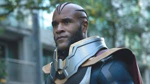
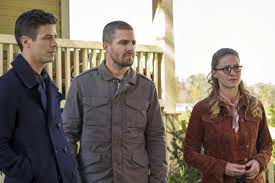
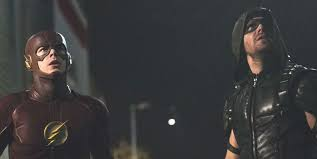
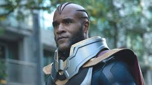
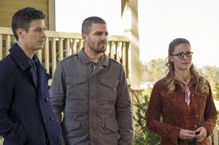
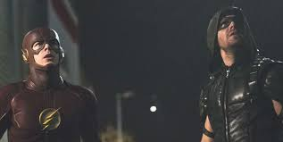

Arrowverse Timeline
Crossover Episodes:
Flash vs. Arrow
Barry Allen gets first billing in “Flash vs Arrow”, which will conclude with tomorrow night’s Arrow hour, “The Brave and the Bold.” Roy Bivolo, a metahuman with the power to send people into an uncontrollable rage, uses his powers to rob the Central City bank. Police detective Eddie Thawne proposes to capture the Flash because he was at the crime scene, but is rejected by the captain. The police track Bivolo to a warehouse, where he uses his powers on a cop to facilitate his escape. Barry Allen arrives to save Joe West, but is almost injured himself before Oliver Queen, as the "Arrow" vigilante, arrives to stop the cop. Later, Oliver informs Barry that he and his team are in Central City tracking down intel on a killer who uses lethal steel boomerangs. Barry and his friends suggests that they team-up to catch each other's targets and Oliver reluctantly agrees. Oliver tries to teach Barry to be more mindful of his surroundings, but Barry decides to go after Bivolo by himself. Bivolo uses his ability on Barry's mind; but because of Barry's speed, its effects last longer.Eddie continues to persuade his superiors to form a task force unit to capture the Flash, expressing his zero tolerance for vigilantes. When an enraged Barry, as the Flash, attacks Eddie, Oliver tries to stop Barry, and the two engage in a fight. Oliver manages to wrangle Barry long enough for Harrison Wells and Joe to use strobe light to reset Barry's emotional state. Afterward, Barry and Oliver capture Bivolo and place him in the pipeline prison at S.T.A.R. Labs. Due to the incident, Eddie forms a task unit to arrest the Flash. Barry confirms Oliver's belief that the former has still a lot to learn. Oliver advises him to stay away from Iris West, with whom Barry is in love, for a while, because men with secret identities as vigilantes never get the girl. Oliver asks Team Flash to keep his alter ego as the Arrow, a secret. A new mysterious metahuman able to manipulate fire appears in Central City.In a flashback set in Hong Kong, Oliver learns how to torture suspects to gain information. In the present, Oliver and Roy Harper locate Digger Harkness, the boomerang-wielding killer, where they find A.R.G.U.S. operatives looking for him as well. Caitlin Snow and Cisco Ramon arrive in Starling City to help Felicity Smoak investigate Sara Lance's homicidal murderer. Digger attempts to kill Lyla Michaels, Roy, and Oliver, but Barry instantly arrives and stops him. Later, Lyla reveals that Digger was part of the Suicide Squad. When Oliver uses his extreme interrogation methods on a Russian mob member in order to locate Digger, Barry questions how emotionally stable Oliver is with his past tragedies to torture people. Digger locates Oliver's base and wounds Lyla before escaping immediately. In order to leave town, Digger plants five bombs around the city. While Oliver captures Digger, Barry uses both of their teams to defuse the bombs simultaneously. Digger is incarcerated on Lian Yu with Slade Wilson. Before Barry and his team's departure to Central City, Cisco and Caitlin gives Oliver his suit improvements and utilities, him and Oliver learned both of their lessons and decide to have a friendly duel.
Hero's Join Forces
Vandal Savage arrives in Central City looking to kill Kendra Saunders. After he attacks Kendra and Cisco Ramon, Barry Allen takes Kendra to Star City and enlists the help of Oliver Queen and his team to protect her. The team is visited by Malcolm Merlyn who informs them that Savage is an immortal. Later, Kendra is kidnapped by Hawkman, but Barry and Oliver rescue her and capture him. He introduces himself as Carter Hall, and tells them he and Kendra are soulmates who have been connected for millennia. They are destined to die, be reborn, and find each other in each lifetime. Carter also reveals that Savage has killed the pair several times, each time growing stronger. Savage acquires the Staff of Horus, a deadly weapon. Kendra unlocks her abilities and becomes Hawkgirl and the team decides to regroup in Central City. Oliver witnesses his ex-girlfriend Samantha Clayton with her son William, and realizes the child is likely his. Meanwhile, Caitlin Snow and Harrison Wells create a serum that will temporarily increase Barry's speed so that he can defeat Zoom. Jay Garrick initially refuses to test the serum, but changes his mind to save Wells when he is shot by Patty Spivot, who mistakes him for Eobard Thawne. Jay advises against using the serum on Barry.Malcolm orchestrates a meeting between Savage, Barry, and Oliver. Savage demands they turn over Kendra and Carter or he will destroy both Central City and Star City with the Staff of Horus. Oliver has Barry perform a paternity test on William and it confirms that Oliver is William's father. Confronting Samantha, she agrees to let him see William on the condition he tell no one, including William himself, that he is the boy's father. Felicity learns of Oliver's paternity and feels betrayed because Oliver is still willing to keep secrets from her, so she ends their relationship.Barry and Oliver devise a plan to deliver Kendra and Carter as a ruse to get close enough to Savage to destroy the staff. The plan goes horribly wrong; Kendra's powers fail and Savage quickly overcomes the element of surprise and kills both her and Carter before using the staff to destroy Central City. Barry escapes and runs fast enough to go back in time to the point of the original negotiation before everyone else dies. Barry informs Oliver of his time travel and the mistakes that led to defeat. They change their approach to the plan and Barry is able to steal the staff. He and Oliver use it on Savage, turning him into ashes. Kendra and Carter decide to use their powers to help others in another city. Cisco gives Kendra a tracking device. Oliver agrees to Samantha's conditions for him to see William. Even though Barry encourages Oliver to tell Felicity about William (she never learned about him due to Barry's time traveling) he decides to continue to keep the secret from her. Malcolm collects Savage's ashes while whispering, "You owe me one, buddy."
World's Finest
At the DEO, Siobhan Smythe is treated for her fall. The doctor cannot explain her new powers, but confirms she is still human. As she leaves, Siobhan overhears Leslie Willis a.k.a. Livewire being interrogated and starts seeing images of a banshee. The visions continue as she returns to CatCo, where Cat advises Kara about her relationship with James. Siobhan's hypersonic scream sends Kara flying out the window, but a dimensional breach opens and someone rushes out at a high speed and catches Kara, letting her down in a field.The speedster introduces himself as Barry Allen, a.k.a. the Flash, a superhero from a parallel Earth, after Kara reveals herself as Supergirl, and Barry later learns her extraterrestrial origin. At CatCo, Barry meets Winn and James and explains the multiverse and how he reached their universe when testing a tachyon device fastened to his suit. Fascinated by each other's origins, Kara and Barry quickly become friends, and Kara offers to help Barry find a way home. Winn also befriends Barry attributable to his own fascination with parallel universes, but James is overawed by Barry's abilities. Cat calls the four into her office and demands they research the new superhero, rejecting Barry's idea to call him the Flash.Siobhan's aunt Sinead tells her of a banshee's curse on their family. If wronged by others, Smythe women are possessed and develop a powerful wail that belongs to the spirit—to combat the curse, one must kill whoever wronged them. Siobhan concludes she must remove Supergirl to get Kara, unaware they are the same person, and frees Livewire. Cat refuses to go into hiding, so Kara asks for Barry's help and they pinpoint Livewire's location.The Flash attacks Livewire with lightning, but this charges her powers. Supergirl tries to short out Livewire, but Siobhan, now calling herself Silver Banshee, screams and disorients her. The heroes retreat and Kara apologizes for going in without a plan. Barry recalls his similar experience with Roy Bivolo, advising her to practice patience. Barry develops ear buds to dampen Silver Banshee's scream based on those he used against Hartley Rathaway. Livewire and Silver Banshee kidnap Cat and demand the two heroes come to National City Park.Livewire wreaks havoc before Supergirl and Flash arrive. Supergirl frees Cat before engaging Silver Banshee; Flash tackles Livewire, but she knocks him out. Livewire attacks a passing helicopter, but Supergirl takes the blow to protect the people below. The crowd surrounds her, and firefighters blast Livewire with water, causing her to lose control and shock Silver Banshee, defeating both. National City hails Supergirl as hero again. With Flash's help, the police develop a means of incarcerating metahuman criminals, imprisoning Livewire and Silver Banshee.Cat reveals to Kara that she knew Barry was the Flash all along. At the field, Barry determines the kinetic energy from their combined running speed, with the tachyon device active, should create a breach back to his Earth. The two bid farewell before Barry enters the portal. Kara confesses her feelings to James, but he unemotionally walks out. Kara sees all the citizens acting similarly, marching in synchronicity. Non is revealed to be behind these events, as Myriad takes effect.
Invasion!
Barry Allen investigates a meteor crash outside Central City which is a spaceship from which aliens emerge. Lyla Michaels tells the team that the Dominators had landed during the 1950s, but mysteriously departed. Barry assembles the original members of Team Arrow, Thea Queen, the Legends, and Kara Danvers, Supergirl of Earth-38. The team begins training at a S.T.A.R. Labs facility, sparring with Supergirl to prepare for the aliens. Kara struggles to earn Oliver Queen's trust. Cisco Ramon finds and reveals a message Barry's future self sent to Rip Hunter, which exposes Barry's manipulation of the timeline and its effect on other team members. As a result, only Oliver, Kara, Felicity Smoak, Martin Stein, Jefferson "Jax" Jackson, and Caitlin Snow still trust Barry.After the Dominators abduct the President of the United States, the team goes to rescue him; however, Barry remains behind since most of them distrust him with Oliver staying behind in support of Barry. Kara leads the group, but the Dominators kill the President and activate a mind control device to take over the group. The controlled heroes return and attack S.T.A.R. Labs, where Barry and Oliver confront them. While Oliver holds them off, Barry lures Kara to the device and manipulates her into destroying it, freeing everyone from the Dominators' control. When the team regroups, Ray Palmer tells Barry that everyone forgives and trusts him. Sara Lance, Ray, John Diggle, Thea, and Oliver are then abducted by the Dominators.They are held in pods on a Dominators' ship, each one unconscious except for a shared hallucination of simulated reality. In the hallucination, Oliver is living at Queen Manor, having never gotten on the Queen's Gambit, and is about to be married to Laurel Lance. His parents are alive, and Diggle is operating as the vigilante the Hood, instead of Oliver. The captives begin seeing flashes of their real lives, and realize what the Dominators have done to them. Their escape attempt is blocked by personifications of their enemies: Malcolm Merlyn, Deathstroke and two of his Mirakuru soldiers (who killed Ray's fiancée Anna Loring), and Damien Darhk and two of his H.I.V.E. soldiers. The adversaries are defeated, and the five awaken in the Dominators' ship and escape in a shuttle. Felicity, Curtis Holt, and Cisco try to hack into the Dominators' mainframe. Aided by Barry and Kara, they recover a device to locate the captives, who are rescued by Nate Heywood in the time ship, Waverider. Aboard the Waverider, Ray deduces that the Dominators were gathering information about metahumans, using the hallucination as a distraction, to help them build a special "weapon". Meanwhile, the Dominator mothership heads towards Earth.Nate says that the first Dominator invasion occurred in 1951 in Redmond, Oregon. He goes there with fellow Legends Mick Rory and Amaya Jiwe and Felicity and Cisco to kidnap a Dominator for information. Although they are successful, the three Legends and their alien captive are taken prisoner by N.S.A. agents. The Legends learn from the Dominator that the aliens have arrived to assess humanity's threat, now that metahumans have appeared and formed the Justice Society of America. Felicity and Cisco rescue the Legends, and also set the Dominator free, carelessly altering history. In 2016 Central City, the team learns that the Dominators know about Barry's manipulation of the timeline, deem him a threat, and are demanding his surrender in exchange for peace. After the Legends return, the team discovers that the Dominators' weapon is a bomb that will kill all metahumans on Earth, with millions of collateral human casualties. The teams dissuade Barry from surrendering, and he and Cisco reconcile. The team manage to destroy the bomb and force the Dominators to retreat with a pain-inflicting nano-weapon. As the heroes celebrate their victory, Oliver offers Kara his friendship; Cisco gives her a device which will enable her to interdimensional travel and communicate between Earth-1 and Earth-38. Martin persuades Jax not to tell the others that his daughter Lily's existence is the result of a temporal paradox he inadvertently caused when the Legends were in 1987.

Duet
Barry watches the musical "Singing in the Rain", while reminiscing about watching it with his mother. Cisco is worried, as Barry hasn't really moved from the couch ever since his broken engagement with Iris. H.R. calls them, and they head to S.T.A.R. Labs. A breach has opened, and Mon-El and J'onn J'onzz from Earth-38 arrive with comatose Supergirl. Barry watches the musical "Singing in the Rain", while reminiscing about watching it with his mother. Cisco is worried, as Barry hasn't really moved from the couch ever since his broken engagement with Iris. H.R. calls them, and they head to S.T.A.R. Labs. A breach has opened, and Mon-El and J'onn J'onzz from Earth-38 arrive with comatose Supergirl.Mon-El and J'onn explain, what happened to her, but they have no idea what is really going on. J'onn also mentions Music Meister came here to find Barry, since he intended to catch the fastest man alive. Cisco starts tracking the Music Meister, who did this to Kara, only to find he is in the speed lab. Barry goes to fight him, and H.R. encourages Wally to go as well. Music Meister mocks Wally, and knocks him out easily, as he is still shaken about his experience in the Speed Force. Barry attempts to attack the Meister, but he beats Barry to the ground, and hypnotizes him the same way he did with Kara. Barry finds himself in a 50's nightclub and sees Kara singing "Moon River" on the stage, and is amazed how well Kara can sing. Kara manages to notice Barry, and after the song, the two meet in order to find out, what is going on. They encounter to the club owner, who looks exactly like Malcolm Merlyn (with Kara not knowing who he is), but he claims his name is Cutter Moran. and he threatens them to sing something original. Next, they encounter who appears to be Winn Schott, but his name is Grady. And finally they encounter a guy, who is like Cisco. Then Music Meister appears, and explains them, that it wasn't really him, who put them inside this illusion. He just triggered it, and mentions it turned out to be a musical, as both Barry and Kara love musicals (though it could've been anything). Music Meister says, that in order to get out, they need to follow the script to the end. He starts with the three men perform "Put a Little Love in Your Heart". After the song, he mentions that if they die here, they die also in the real world. With not much of a choice, Barry and Kara agree to do, what Music Meister said. Then, they are both knocked out by gangsters led by who seems to be Martin Stein. In the S.T.A.R. Labs, Caitlin finds, that Barry is losing his Speed Force, while Kara is losing the solar radiation inside her, and concludes Music Meister is stealing their powers. Cisco tracks him breaking into a bank with Kara's heat vision, and Wally and Cisco decide to go get him. J'onn offers to come too. Cisco disagrees, until J'onn reveals his Martian Manhunter form, and stuns everyone. The three go after Music Meister, and he has indeed Barry's speed. Wally gives chase, but as soon as he catches him, he uses Kara's flying power to escape. Cisco tells J'onn to jump into breach, in order to hit him. He does so, and Wally uses supersonic punch to knock him out cold. Inside the illusion, Kara and Barry are kept prisoners by Digsy Foss, who looks like Joe. He asks the heroes to find his daughter, Millie, who looks like Iris. They agree, and Cisco's look alike leads them to where she is. Kara reminds Barry, that even if she looks like Iris, it's not her. She also mentions she is glad she hasn't seen anyone, who looks like Mon-El. When they hear screams, they break down the door, and Kara is shocked, that Millie is making out with Tommy Moran, who looks exactly like Mon-El. The two lovers explain, that they are truly in love, but it is forbidden as they are the children of two rival gangster leaders. Barry says, that they should hold on to the love they have, and encourage them to tell it to their fathers. Barry takes Millie to Digsy, and Kara takes Tommy to Cutter. Both fathers are initially hostile towards it, until Barry and Kara explain the truth of their love. At the same time, both heroes come to understand their mutual feelings towards Iris and Mon-El. Fathers start to sing "More I Cannot Wish You", seemingly accepting their children's love. But as soon as Barry, Kara, Millie and Tommy leave, both fathers declare war on one another. At S.T.A.R. Labs, Iris and Mon-El go to see imprisoned Music Meister, and demand he brings Barry and Kara back. He claims he can't as his powers don't work that way. They need to finish the script, but then he mentions, that love is the real key of getting them back. If Iris truly loves Barry and Mon-El loves Kara, they can get them back. In the illusion, Barry and Kara feel relieved, that they succeeded, until Grady comes to tell them that it's rehearsal time. Realizing they need to finish the musical, Kara asks, does Grady have something original. He starts to play piano, and Barry and Kara make up a song "Superfriend" (the lyrics are about the Flash and Supergirl and their lives). Their live performance receives standing ovation. Suddenly, they hear gunfire outside, as the two rival families have started fighting. Barry attempts to diffuse the fight, but without his powers, he is shot. Kara is shot as well, and the hits cause their physical bodies to go into convulsions.Caitlin can't do anything for them, but then Iris and Mon-El remember, what Music Meister said: their love can bring them back. Iris urges Cisco to vibe them inside the illusion. It works, and they arrive to see their loved ones dying. Barry and Iris confess their love to each other, and Mon-El apologizes to Kara how he lied to her, and Kara forgives him. They kiss, and all four are returned to the real world. Everyone are happy, and Music Meister enters with applause. He tells Cisco that the particle accelerator prison never really held him. Barry and Kara are baffled, why he did this to them, and he tells them he wanted to teach them a lesson in love, as both Barry and Kara were two persons with broken hearts. The lesson was to make them realize that despite the lies and other problems they have with the ones they love, they can be overcome. He then disappears. Kara, Mon-El and J'onn are preparing to leave, and both heroes are amazed, what good singers they are. Kara also warns Mon-El, that if he ever lies to her again, she will drop a mountain on him. Barry and Iris return home, and the place is still the same. Barry starts to sing "Runnin' Home to You" to Iris, and at the end proposes to her again, this time with the right reasons.
Crisis on Earth-X
A Nazi regime rules the parallel world of Earth-X, where an archer known as Dark Arrow is the Führer. He seizes a temporal gateway from the Freedom Fighters, which enables travelling to other universes. On Earth-1, Barry Allen and Iris West's friends, including Kara Danvers and Alex Danvers from Earth-38, come to Central City for Barry and Iris's wedding. Harry Wells, Cisco Ramon, and Caitlin Snow develop a serum to separate the Firestorm matrix from Martin Stein and Jefferson Jackson. However, Jefferson is reluctant to give up being Firestorm. Oliver Queen re-proposes to Felicity Smoak, but she is hesitant about marrying him. The wedding ceremony is interrupted by invaders from Earth-X led by Dark Arrow, his Kryptonian wife Overgirl, and Prometheus. After Kara injures Overgirl, and Alex and Sara Lance capture Prometheus, the Nazis retreat. Dark Arrow and Overgirl, who are Oliver and Kara's doppelgängers respectively, discuss their next step with Eobard Thawne, Barry's speedster nemesis who was previously presumed dead.In S.T.A.R. Labs, Prometheus reveals himself as Tommy Merlyn's Earth-X doppelgänger, then takes a suicide pill out of loyalty to the Führer after taunting Oliver. Harry reveals that through his exploration of the multiverse, he discovered that Earth-X is a dystopian world where World War II was not won by the Allied Forces. Dark Arrow, Overgirl, and Thawne steal an experimental sub-light generator, the Prism, from a research company. Oliver's team, along with Harry, Caitlin, Cisco, and Mick Rory, are in captivity at S.T.A.R. Labs after the Nazi forces occupy it. Oliver, Barry, Sara, Martin, Jefferson, and Alex are taken to a concentration camp on Earth-X, while Kara is moved to S.T.A.R. Labs. Overgirl is dying from disproportionate solar irradiance in her heart and Dark Arrow plans to use the Prism, powered by S.T.A.R. Labs' particle accelerator, to create artificial red sunlight that can weaken both Karas' invulnerability, allowing Thawne to conduct a heart transplant from Kara to Overgirl.In the concentration camp, the heroes are rescued from execution at the hands of SS-Sturmbannführer Quentin Lance by Ray Terrill and Leo Snart. Thawne prepares to operate on both Overgirl and Kara, and Iris and Felicity work to rescue their friends at S.T.A.R. Labs. General Winn Schott, the commander of the Freedom Fighters, is determined to strand Dark Arrow and Overgirl on Earth-1 by destroying their temporal gateway. While posing as Dark Arrow, Oliver discovers the Nazis' doomsday device, a timeship called Wellenreiter, a militarized equivalent of the Legends' Waverider. Oliver allows the timeship to enter Earth-1 to avoid jeopardizing his cover, but he is ultimately exposed when he refuses to kill Felicity's Earth-X doppelgänger, a concentration camp prisoner. The heroes struggle against both the Freedom Fighters' Red Tornado, deployed by Schott as a failsafe, and the Nazi forces, and the gateway is opened at the cost of Martin being mortally wounded.The heroes return to Earth-1, and Iris, Felicity, Kara, and the others are rescued by the returned heroes and the Waverider crew. Jefferson is also affected by Martin's injury, so Martin uses the serum to separate the Firestorm matrix and dies from his wounds. Jefferson tells Martin's family of his fate; they, along with the Legends and Barry's team are devastated by Martin's death. His death spurs the heroes to declare war on Earth-X's Nazi forces. When the Nazis attack Central City, the heroes counter their assault. Harry, who pilots the Waverider, destroys the Wellenreiter after the heroes disable its shield. Barry spares Thawne, who vows to return. During the fight with Kara, Overgirl's solar radiation goes nuclear and Kara carries her into space, where Overgirl explodes. Oliver kills Dark Arrow soon after. After Martin's funeral, Kara and Alex return to Earth-38, Ray returns to Earth-X, and Leo decides to remain with the Legends. John Diggle, an ordained minister, officiates Barry and Oliver's weddings with Iris and Felicity, respectively.
Elseworlds
On a ravaged Earth-90, The Flash escapes as a mysterious figure uses a powerful book. On Earth-1, the same figure gives the book to Arkham Asylum psychiatrist John Deegan, who uses it to rewrite reality according to his will. The following day, Oliver Queen and Barry Allen wake up in each other's lives. Team Flash does not believe them and locks them up in the S.T.A.R. Labs pipeline. Oliver and Barry use each other's abilities to escape and travel to Earth-38 to get help from Kara Danvers and acquaint themselves with her cousin Clark Kent and Lois Lane, at Smallville, Kansas. Meanwhile, an android called A.M.A.Z.O. awakens and threatens Central City. Cisco Ramon retrieves Oliver and Barry from Earth-38, with Kara and Clark helping. After defeating A.M.A.Z.O., Clark returns to protect Earth-38. Cisco vibes Deegan and the mysterious figure, who sees them vibing him and tells the group that something is coming and they will not be able to stop it. Oliver realizes the figure and Deegan were located in Gotham City.In Gotham, Barry, Oliver and Kara are arrested by the GCPD. They are bailed out by Wayne Enterprises' CEO Kate Kane, who tells them Deegan is at Arkham Asylum. The trio, with the assistance of Caitlin and Diggle, break into Arkham to confront Deegan. They retrieve the "Book of Destiny" but Deegan escapes by causing a mass breakout. During a confrontation with inmate Nora Fries, Barry and Oliver are exposed to fear gas and believe each other to be Eobard Thawne and Malcolm Merlyn, respectively. After stopping the breakout, Kate, as the vigilante Batwoman, rouses them from their hallucinatory state and tells them to leave Gotham. They head to A.R.G.U.S. to restore reality, where Earth-90's Flash warns them about Mar Novu / Monitor, who is testing worlds for an impending crisis. They confront Novu, who breaches away Earth-90's Flash, reclaims the book and returns it to Deegan, who writes a new reality in which Barry and Oliver are powerless criminals known as the Trigger Twins and are confronted by a black-suited Superman.Oliver realizes the Superman impostor is actually Deegan before forcing him to save innocents while they escape to find Cisco. Deegan and his forces, including the Earth-1 doppelgänger of Kara's adoptive sister Alex Danvers, are holding Kara at S.T.A.R. Labs. Barry and Oliver locate Cisco and persuade him to take them to Earth-38. They find Clark, who agrees to return with them to Earth-1 while Kara persuades Alex to release her. Arriving on Earth-1, Clark and Oliver fight Deegan and his forces while Alex, Barry, and Kara locate the Book of Destiny in the Time Vault and take it to Clark, who restores Barry, Oliver, and Kara to their real selves. Deegan retrieves the book and attempts to rewrite reality again. To impede his progress, Barry and Kara slow down time by speeding around the Earth in opposite directions. Oliver confronts Novu, asking him to spare Barry and Kara, but Novu demands something from Oliver in exchange. Clark, joined by Lois, Brainiac 5, and J'onn J'onzz, fights Deegan and a revived A.M.A.Z.O. Barry and Kara are nearly torn apart by their speed but Oliver shoots the book with an arrow enhanced by Novu. Deegan reverts to himself, though heavily disfigured, and reality is restored. After returning to Earth-38, Clark and Lois tell Kara they are expecting a child and will return to Argo City, leaving Earth's protection to her. On Earth-1, Oliver is contacted by Kate, who says Deegan, now incarcerated at Arkham, has made a new friend who tells Deegan: "Worlds will live, worlds will die, and the universe will never be the same".
Crisis on Infinite Worlds
As the Crisis begins, the anti-matter wave destroys countless parallel universes. Meanwhile, on Earth-38, Brainiac 5 detects the anti-matter wave approaching Argo City, prompting Kara Danvers to warn her mother Alura Zor-El, her cousin Clark Kent, and his wife Lois Lane. Clark and Lois narrowly send their son Jonathan off into an escape pod just as the wave wipes out Argo. Across Earth-1, Harbinger collects Oliver and Mia from Lian Yu, Barry from Central City, Kate Kane from Gotham City, and Sara Lance and Ray Palmer from Star City and brings all of them to Earth-38. While Harbinger also rescues the Kents from Argo, Alura was not as fortunate. As Harbinger briefs the gathered heroes on the threat of the Anti-Monitor, the Monitor raises a quantum tower to impede the anti-matter wave while the DEO and Lena Luthor work to evacuate the inhabitants of Earth-38 to Earth-1. After learning Jonathan's pod landed on Earth-16, Lois, Sara, and Brainiac 5 leave to get him while the others stay behind to fend off the Anti-Monitor's forces. In preparation for his death, Oliver passes the mantle of Green Arrow to Mia. When he learns Barry is fated to die however, he argues with the Monitor over the deal they made last year.[a] The heroes make their stand at the tower and fend off an army of shadow demons until the Monitor teleports them off-world, deeming the battle to be lost. Refusing to leave yet, Oliver temporarily nullifies the Monitor's powers and stays behind to ensure the exodus succeeds. Back on Earth-1, Lois' team returns with Jonathan before the Monitor brings a dying Oliver to say good-bye, commenting that this was not how he was supposed to die. Nash, now a "Pariah" for releasing the Anti-Monitor, appears and announces that events have changed and everything is doomed.[12].With the Earth-1 Legends unavailable, Harbinger travels to Earth-74 to recruit Mick Rory so the heroes can use his Waverider as their base of operations. In the wake of Oliver's death, which he cannot undo because of the Anti-Monitor's growing power, the Monitor consults the Book of Destiny and learns of seven Paragons who could turn the tide. Four of them are Kara, the "Paragon of Hope"; Sara, the "Paragon of Destiny"; the "Paragon of Truth", another Superman who has suffered "more than any mortal man"; and the "Paragon of Courage", who is described as the "Bat of the Future". Clark, Lois, and Iris locate the second Superman on Earth-96, though Lex uses the Book of Destiny to mind-control Clark-96 until Lex is knocked out by Lois. Kara and Kate travel to Earth-99, where the latter fails to convince an elderly crippled Bruce Wayne, who became a killer. Bruce is in turn accidentally killed in a heated confrontation with Kate and Kara. Elsewhere on Earth-18, Sara, Barry, Mia, and John Constantine take Oliver's body to a Lazarus Pit in an attempt to resurrect him, but the accumulating anti-matter across the multiverse prevents them from bringing his soul back. Back on the Waverider, the Monitor tasks Ray with building a "Paragon detector", which identifies Kate as the true "Paragon of Courage". Unbeknownst to everyone, Harbinger is secretly contacted by the Anti-Monitor. With Cisco Ramon's help, Ray's "Paragon detector" identifies Barry as the "Paragon of Love", J'onn J'onzz as the "Paragon of Honor", and Ivy Town scientist Ryan Choi as the "Paragon of Humanity". Iris, Ray, and Ralph Dibny attempt to recruit a reluctant Choi, who eventually complies when Iris assures him that ordinary humans can be superheroes too. After the Monitor restores Cisco's powers, he, Barry, and Caitlin Snow meet up with Pariah at the Anti-Monitor's chamber beneath Central City, where they find an anti-matter cannon powered by the Flash of Earth-90. When Cisco frees Barry-90, the cannon goes critical, so Pariah recruits Jefferson from his recently-destroyed Earth to contain the energy. Barry-1 volunteers to destroy the cannon, which would result in his prophesied death. However, Barry-90 stops him, claiming the Monitor didn't specify which Flash would die in the Crisis, and takes Barry-1's place. Meanwhile, Constantine, Mia, and Diggle visit Lucifer on Earth-666 to get his help in entering Purgatory and retrieve Oliver's soul. Before they can leave Purgatory, Jim Corrigan appears so he can bestow onto Oliver the Spectre's power. Oliver accepts, and Constantine's team is sent back to the Waverider without him. While the heroes regroup, the Anti-Monitor sends a brainwashed Harbinger to kill the Monitor so he can absorb his power and finish destroying the multiverse. Before the remaining heroes and Earth-1 are destroyed, Pariah sends the Paragons to the Vanishing Point to keep them safe, where they witness Lex replace Superman-96 with himself using a page from the Book of Destiny.[14]A flashback to the planet Maltus 10,000 years ago shows Mar Novu experimenting with time-travel to witness the birth of the universe, only to accidentally end up in the anti-matter universe and reveal the multiverse's existence to the Anti-Monitor. In the months since the multiverse was destroyed, the Paragons have struggled to survive. Once Corrigan teaches him how to use the Spectre's power, Oliver heads to the Vanishing Point to rescue the Paragons and strengthen Barry's powers. With his increased speed, Barry drops off Kara, Choi, and Lex on Maltus, but gets attacked by the Anti-Monitor, losing everyone else across the Speed Force. Despite an expected double-cross from Lex, Kara and Choi convince Novu not to go through with his plans. Once Barry retrieves everyone, they arrive at the dawn of time, only to learn the Anti-Monitor will always learn of the multiverse's existence as there will always be a Novu in the multiverse who cannot give up his ambitions. The Paragons battle the Anti-Monitor and his shadow demons until Oliver uses the Spectre's power to restore the multiverse, with the Paragons providing additional assistance via Lex's Book of Destiny page. As a result however, Oliver dies a second and final time in Barry and Sara's arms.[15]Waking up in the newly recreated universe, the Paragons discover they are the only ones who remember the Crisis and that both Earth-38 and Jefferson's Earth have been merged with Earth-1 into a composite universe later designated as Earth-Prime; among other changes throughout the multiverse. While J'onn uses his psionic powers to bring their allies up to speed, Sara attempts to find Oliver, though without success. Later that night, the Paragons are attacked by shadow demons. Upon finding a restored and remorseful Nash, he discovers that the Anti-Monitor is still alive and plotting to renew his destruction of the multiverse. To stop him once and for all, Nash, Ray, Barry, and Choi work to develop a bomb capable of shrinking the Anti-Monitor for eternity while the other heroes distract him. Once it's finished, Kara uses it on the Anti-Monitor and sends him to the microverse. Sometime later, Barry, Kara, Sara, Kate, Clark, J'onn, and Jefferson hold a memorial service for Oliver before agreeing to come together as a league of heroes to protect their new world in Oliver's memory.[16]
 




